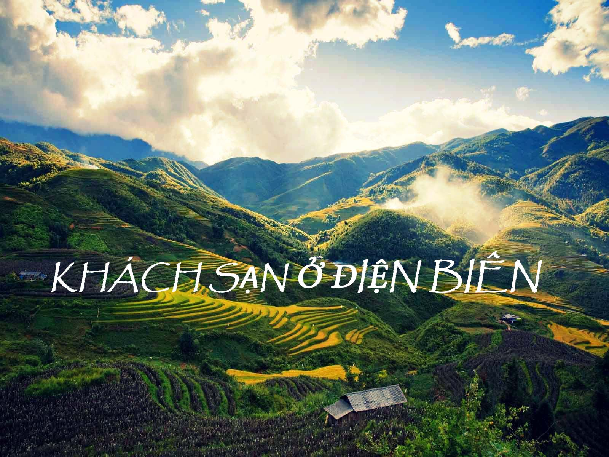
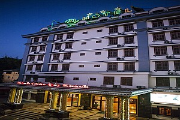
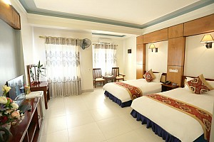
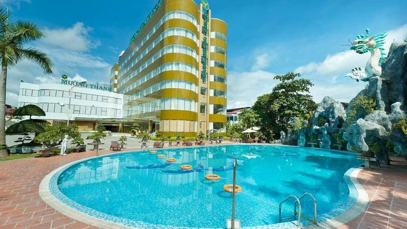
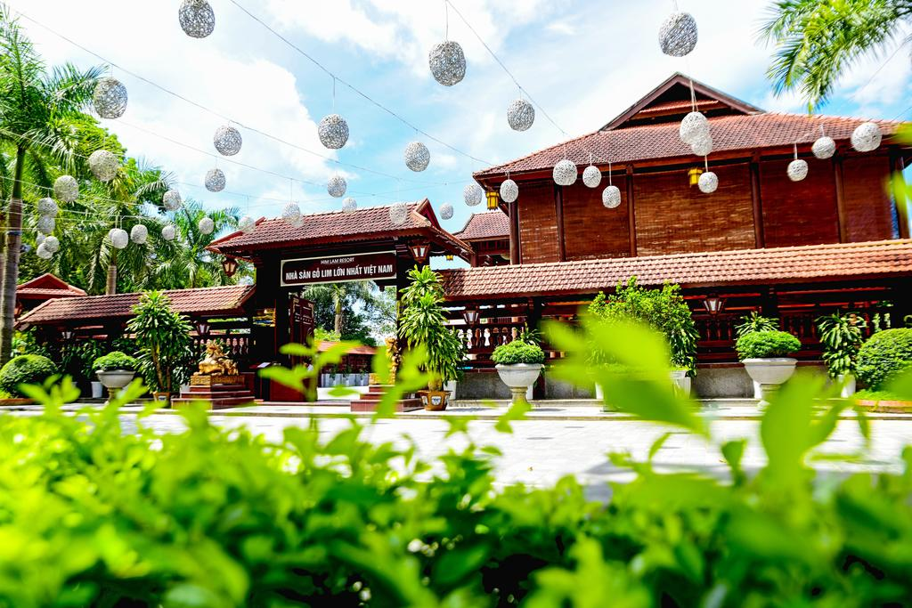
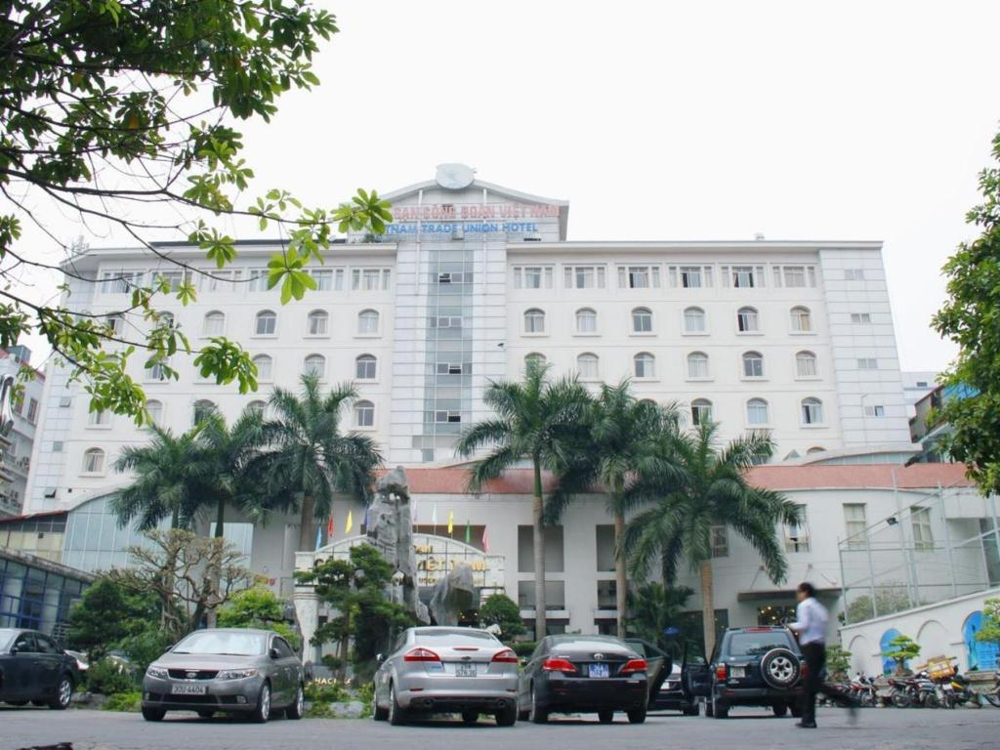

-

KHÁCH SẠN A1 ĐIỆN BIÊN
Tiêu Chuẩn:3*
Giá phòng : Liên hệ
Số lượng : 30 phòng
Địa chỉ: Số 3, Đường Hoàng Công Chất, Điện Biên Phủ , Điện Biên.
Khách sạn A1 Được Thành Lập từ tháng 1 năm 2014 , trực thuộc công ty TNHH Trường Thọ Điên Biên, là một đơn đã được biết đến trong lĩnh vực xây dựng đường giao thông, với bề dầy thành tích đã đạt được trong hơn 20 năm qua. Cùng với sự phát triển nhanh về ngành du lịch của thành phố lịch sử Điện Biên -

Khách Sạn Ruby
Tiêu Chuẩn:3*
Giá phòng : Liên hệ
Số lượng : 31 phòng
Địa chỉ: Số nhà 43 - Tổ 11 - Phường Mường Thanh - TP Điện Biên Phủ - Tỉnh Điện Biên
Nằm ở vị trí trung tâm thành phố Điện Biên Phủ, phía trước là công viên, phía sau là con đường đẹp nhất thành phố - Nguyễn Chí Thanh, gần trung tâm mua sắm, ăn uống, giải trí, cách chợ người Thái khoảng 300m, chợ trung tâm và siêu thị Điện Biên, Hoa Ba khoảng 200m, khách sạn Ruby nhìn ra dòng sông Nậm Rốn thơ mộng – niềm tự hào của người dân Điện Biên. -

Khách Sạn Mường Thanh Điện Biên Phủ
Tiêu Chuẩn:4*
Giá phòng : Liên hệ
Số lượng : 144 phòng
Địa chỉ: Số 514 - Đường 7/5 - P. Him Lam - Tp. Điện Biên Phủ - Tỉnh Điện Biên
Mường Thanh Điện Biên Phủ được thành lập vào năm 1997, được đặt theo tên Mường Thanh – cái tên gắn liền với mảnh đất Điện Biên Phủ huyền thoại và là khách sạn đầu tiên trong hệ thống. Khách sạn Mường Thanh nằm ở trung tâm thành phố Điện Biên. Khách sạn đạt tiêu chuẩn 4 sao với phong cách phục vụ chuyên nghiệp và cởi mở, hiếu khách của người Tây Bắc. -

Khách Sạn Ruby
Tiêu Chuẩn:3*
Giá phòng : Liên hệ
Số lượng : 31 phòng
Địa chỉ: Số nhà 43 - Tổ 11 - Phường Mường Thanh - TP Điện Biên Phủ - Tỉnh Điện Biên
Nằm ở vị trí trung tâm thành phố Điện Biên Phủ, phía trước là công viên, phía sau là con đường đẹp nhất thành phố - Nguyễn Chí Thanh, gần trung tâm mua sắm, ăn uống, giải trí, cách chợ người Thái khoảng 300m, chợ trung tâm và siêu thị Điện Biên, Hoa Ba khoảng 200m, khách sạn Ruby nhìn ra dòng sông Nậm Rốn thơ mộng – niềm tự hào của người dân Điện Biên. -

Khách Sạn Ruby
Tiêu Chuẩn:3*
Giá phòng : Liên hệ
Số lượng : 31 phòng
Địa chỉ: Số nhà 43 - Tổ 11 - Phường Mường Thanh - TP Điện Biên Phủ - Tỉnh Điện Biên
Nằm ở vị trí trung tâm thành phố Điện Biên Phủ, phía trước là công viên, phía sau là con đường đẹp nhất thành phố - Nguyễn Chí Thanh, gần trung tâm mua sắm, ăn uống, giải trí, cách chợ người Thái khoảng 300m, chợ trung tâm và siêu thị Điện Biên, Hoa Ba khoảng 200m, khách sạn Ruby nhìn ra dòng sông Nậm Rốn thơ mộng – niềm tự hào của người dân Điện Biên.


TIN MỚI NHẤT
- Danh tiếng của du lịch Việt Nam ngày càng được biết đến
- UNESCO: Nhiều thách thức đang đè nặng lên di sản ở Việt Nam
- Sôi nổi “Hành trình về nguồn” tại Điện Biên
- Xây dựng phòng tuyến ứng phó dịch bệnh Covid-19 trên biên giới
- Phát huy hiệu quả tuyên truyền phòng, chống dịch Covid-19
- Nỗ lực hoàn thành xây dựng nhà ở cho hộ nghèo Mường Nhé (24/04/2020)
- Có hay không việc cấp sổ đỏ “chồng” lên hành lang hạ lưu cống thoát nước của Tỉnh lộ 140? (22/05/2020)
- UNESCO: Nhiều thách thức đang đè nặng lên di sản ở Việt Nam
Nguồn: : Cinet